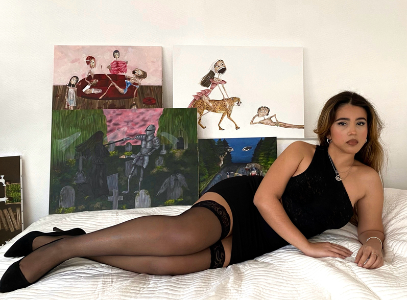

Rania (b. 2002, Trappes, FR) is a visual artist whose work explores the physical violence of emotions through the lens of horror and mid-century glamour. Influenced by her hypersensitivity, she perceives feelings, be they love, joy, or fear, as external forces that the body endures. To express these feelings explicitly, she uses a horror aesthetic placed in opposition to the glamour of the 1950s and 60s, using the genre to represent sentimental metaphors.
Her practice serves as a raw observation of human interactions, placing women at the center of the narrative. Her heroines are not monsters, but ordinary women maintaining their appearance and femininity while confronted with a brutal reality, whether emotional, physical, or societal. Her paintings act as magnets: using the macabre to captivate the viewer and force a physical recognition of the female experience.
Rania conceives her work as a visual anthology-short, intense narratives reminiscent of George A. Romero’s Creepshow. In her world, vulnerability is not a flaw but a source of power. Through acrylics, she creates a "picture book for adults" where horror, humor, and sensuality coexist, revealing the buried thoughts and raw humanity we often prefer to keep silent.
Represented in Europe by La Scène des Artistes.